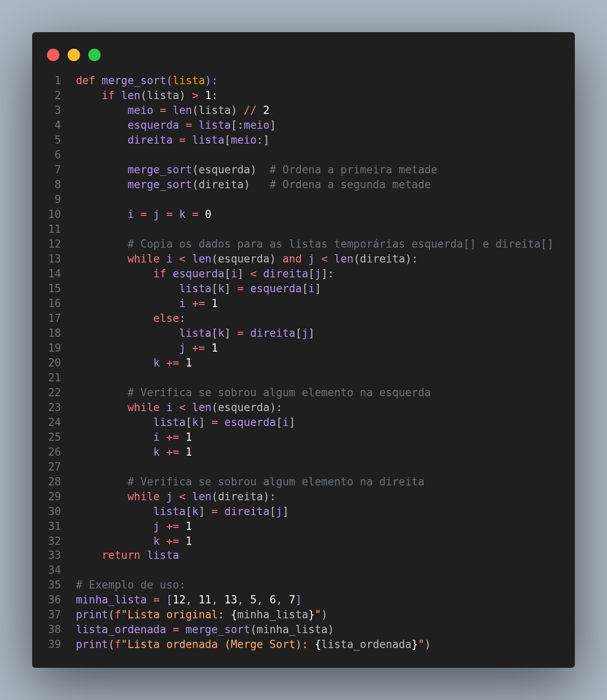

O Merge Sort, ou Ordenação por Intercalação/Mesclagem, é um algoritmo eficiente e estável que utiliza a estratégia "dividir para conquistar". Ele funciona dividindo recursivamente a lista em duas metades até que cada sublista contenha apenas um elemento (que é, por definição, ordenado). Em seguida, ele mescla essas sublistas de volta, combinando-as de forma ordenada.
Analogia: Imagine que você tem duas pilhas de provas de alunos, e cada pilha já está ordenada por nota. O Merge Sort seria como um professor que pega a prova com a menor nota de cada pilha, compara-as e coloca a menor das duas em uma nova pilha final. Ele repete esse processo até que ambas as pilhas originais estejam vazias e a nova pilha final esteja completamente ordenada.
Complexidade: A complexidade do Merge Sort é O(n log n) em todos os casos (pior, médio e melhor). Isso o torna um algoritmo muito eficiente para ordenar grandes volumes de dados, pois seu desempenho não degrada significativamente com a organização inicial da lista.
